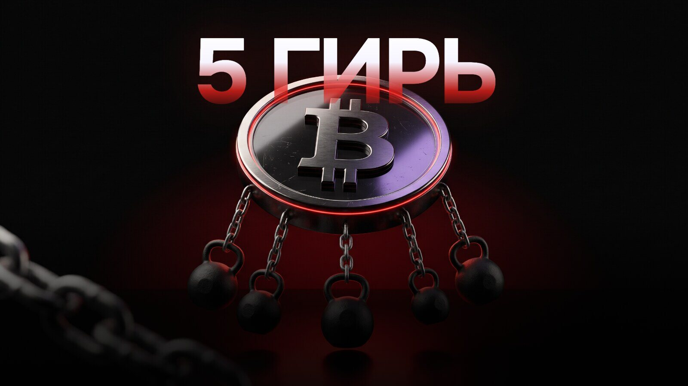
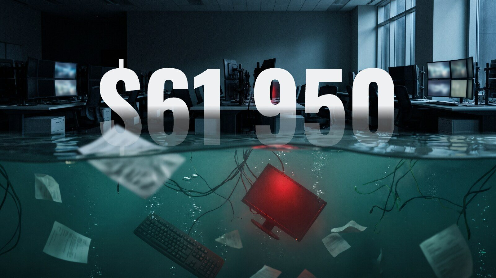
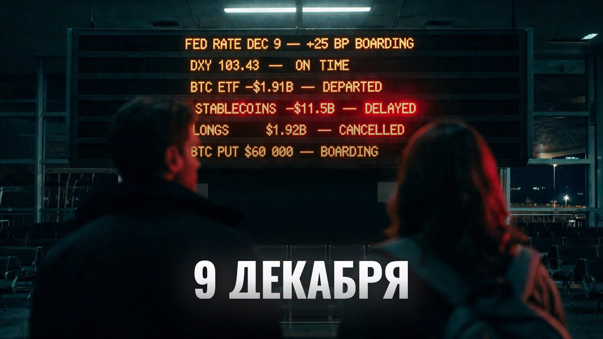

Картинки: было → стало
Тема Андрея «Пять гирь на шее биткоина». Слева — 6 кадров, что ушли в пилоте. Справа — 3 кадра по новому процессу (как в лаборатории).
- Почему было слабо: маска ставила табло/панель/гирю ПЕРЕД цифрами; три раза одна идея «табло $60 000»; три кадра — старыми неутверждёнными стилями; рисовалось с одного раза; плоский белый текст.
- Как теперь: ТЗ пишет Opus по промптам ТОП-кадров → на каждое ТЗ 3 кандидата (Gemini NB Pro, бесплатно) → критик-зрение выбирает лучший (слабее 7 — повтор) → текст кодом, после сборки проверка: каждая буква видна.
- 3 идеи — разные: 3D-предмет · вода · табло. Все цифры — из поста.
Было — 6 кадров пилота

Стало — 3 кадра
3D-предмет перед гигантом — в палитре CRYPTUS · «5 ГИРЬ»

Идея: Биткоин-монета висит на пяти чугунных гирях на цепях: её тянет вниз не один продавец, а пять грузов сразу
🆓 Gemini NB Pro · 3 кандидата · критик: 8/10 — Ровно пять гирь на цепях, все висят и тянут монету вниз — идея читается сразу. Палитра чёрный/красный/фиолетовый совпадает с эталоном, есть передний план с цепью в расфокусе. Сверху много чистого чёрного места под «5 ГИР
проверка читаемости: буквы закрывались на 40% → пересобрано спереди · 6.8 мин
Вода затапливает цифру · «$61 950»

Идея: Пустой зал трейдеров затоплен по пояс, светящиеся мониторы уходят под воду: цена «утонула» до $61 950
🆓 Gemini NB Pro · 3 кандидата · критик: 7/10 — Best fit for the brief. The water surface runs deep into the hall with reflections, the monitors on the desks glow (blurry, no readable text), and the red monitor in the centre is sinking. Clear hero and solid depth. Min
проверка читаемости: ✓ все буквы видны · 7.5 мин
Текст в сцене (табло вылетов) · «9 ДЕКАБРЯ»

Идея: Табло вылетов рынка показывает статусы пяти гирь: ставка ФРС на посадке, ETF улетели, стейблы задержаны, плечо отменено
🆓 Gemini NB Pro · 3 кандидата · критик: 8/10 — Closest to the reference: large foreground heroes with blur, a real sense of depth, and the DELAYED glow is a strong accent. The board rows are slightly uneven (the gap in LONGS, the ragged left edge), and the man's head
проверка читаемости: ✓ все буквы видны · 19.2 мин
Как критик выбирал (ТЗ 1, «5 ГИРЬ»)
Третий забракован: шесть гирь вместо пяти — критик это поймал.